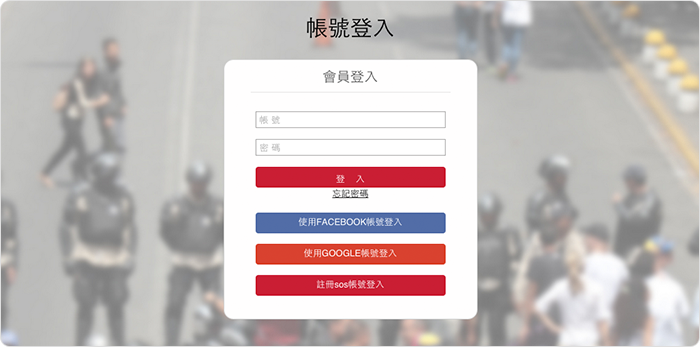
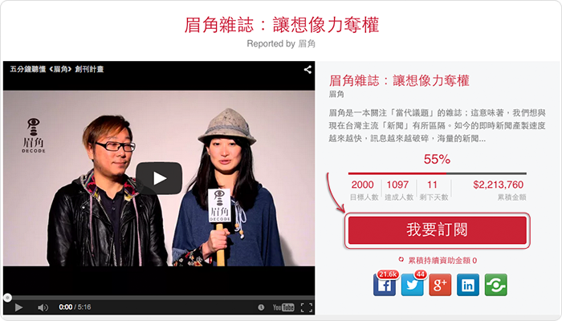
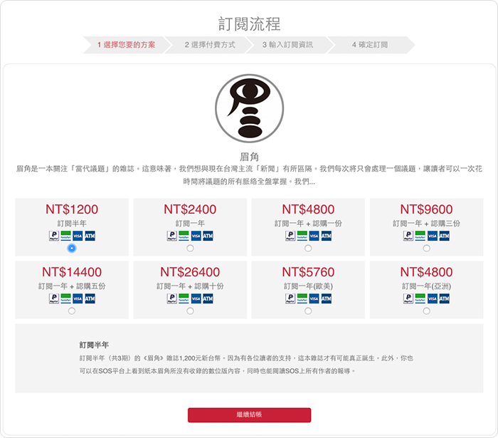
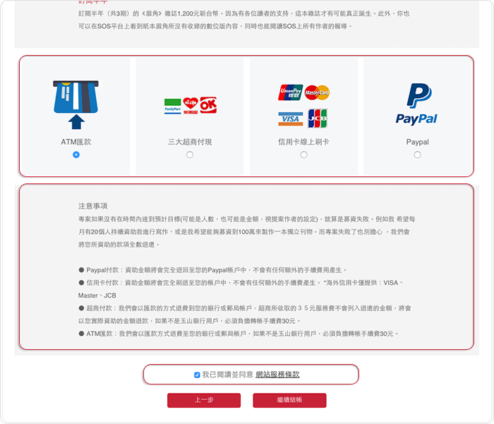
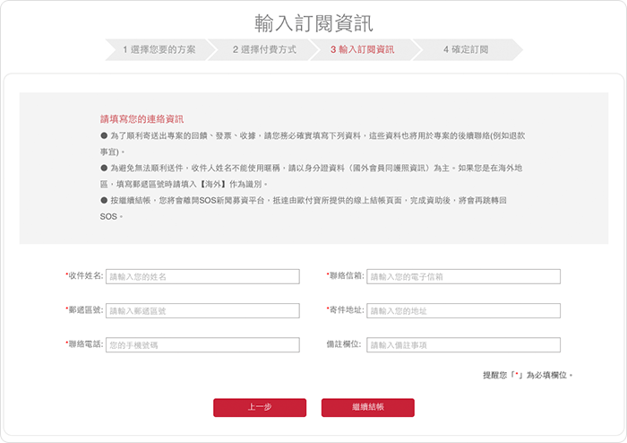
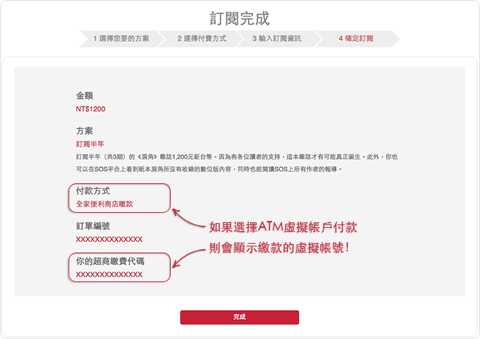
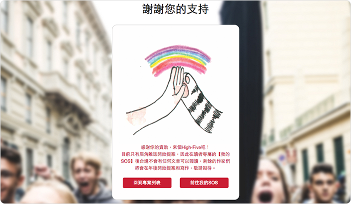
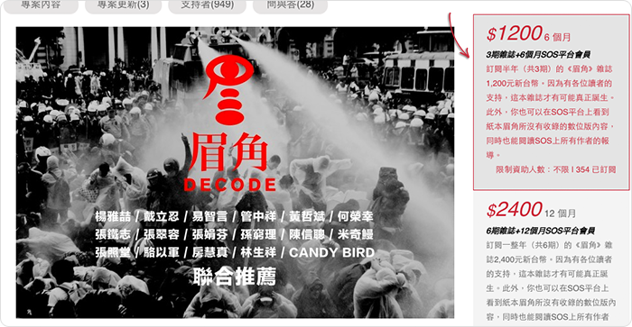

• 為何成立SOS新聞募資平台?
台灣媒體有許多需要被解決的問題，但媒體人與閱聽眾卻不斷互相怪罪，我們希望真的站出來做些什麼，希望成立一個好的媒體平台，慢慢架構出優質的生態體系。SOS新聞募資平台的誕生，便是致力於提供讀者、作家一個更乾淨的媒體平台，甩開廣告商、流量的束縛與限制，完全仰賴讀者與作者間的互動，藉此顛覆主流媒體的框架和思維。
• SOS新聞募資平台是什麼？
透過群眾募資的方式，我們加深讀者和作家間的關係，讀者成為參與者(在傳播形式中添加了點創新和想像力，why not？)，讓那些不被主流媒體所重視和採用；卻更具有深度、批判力、值得被更多人了解的議題，能夠被更多大眾看見。
在SOS，讀者可以每月持續性地資助自己喜歡的作家和議題；你只需要瀏覽平台上記者們即將進行的報導，選擇自己有興趣了解、重視，或認為有重要性的專案並資助，一切就完成了!
你不只能夠閱讀該位作家的報導，同時也可以閱讀SOS平台上的所有內容，想像成這是一本數位雜誌，每月149元，以一天不到5元的金額販售，我們希望藉此創造出一個更好的新聞機制和運作方式，同時也提供讀者更有質量的新聞內容。
• SOS與一般群眾募資網站不同的地方
一般群眾資平台大多以「募資金額」做為主要目標，而我們最大的不同在於以「資助人數」作為主要目標(每月最低的方案是149元，但作者也能自己設定方案和金額)。因為一個人資助100萬，和100萬個人資助1塊錢是完全不一樣的邏輯，我們希望一位作家在SOS平台上找到收入來源，但同時也能找到更多的讀者群和寫作的影響力，而不是變相地再次被壟斷。
• 我們收取的手續費用
我們會向作者收取30%的平台刊登服務費用。比率高但金額不高，我們承諾這筆收入不會是平白無故的，我們將會盡力協助每位作者找到自己的讀者群並長期經營和寫作下去。
• 群眾募資是什麼？
群眾募資是這幾年相當盛行的一種募資和行銷方式，在一個公開的網路平台上向大眾提出你的想法和點子，藉此來向群眾們募集實際執行時所需要的資金。在SOS平台上，作者可以提出一個自己未來想要進行的寫作計畫，在未來透過讀者的持續資助深入書寫。
• 群眾募資有什麼好處？
對於作家來說，群眾募資的好處是你可以事先知道自己的讀者群在哪裡，市場願不願意買單；此外，透過讀者的實際支持，你也可以真正深入去書寫有價值的內容，不用擔心受到媒體意識形態、流量、廣告主的影響。對於一個寫作者來說，這樣的方式相當適合經營個人品牌，而更棒的是，提案成功後你還會有穩定的「稿費」收入。
• 群眾募資的法律問題？
現階段在SOS新聞募資平台的運作上，我們並非是以股票或任何有價證券作為回饋，因此不會有任何的違法問題。在3月前，我們團隊將會完成電子發票的串接，讀者所資助的金額都會收到發票，以平台會員費的方式開立，作者只需要專注在寫作，不須擔心任何收據或發票問題，因此也不會有任何法律問題產生。
• 使用信用卡付款(VISA、MasterCard、JCB、銀聯)
如果你透過信用卡的方式資助專案，但專案失敗了，我們將全額刷退至原付費信用卡號，這過程中不會有任何手續費產生，在專案結束後約需要10個工作天完成退費。
• 使用超商付款
如果你透過超商付款的方式資助專案，但專案失敗了，我們會以匯款的方式退費到你的銀行或郵局帳戶，但超商所收取的３５元服務費不會列入退還的金額，我們會以你實際資助的金額退款。在專案失敗後，你會收到一封由我們系統寄出的郵件，要求你提供你的銀行或郵局帳戶作為退款使用，不會用於其他用途，在專案結束後約需要10個工作天完成退費。
• 使用Paypal付款
如果你透過Paypal帳戶的方式資助專案，但專案失敗了，資助金額將會全額退回至你的Paypal帳戶中，不會有任何額外的手續費用產生，在專案結束後約需要5個工作天完成退費。
• 使用ATM匯款
如果你使用匯款的方式資助專案，但專案失敗了，我們會以匯款方式退費至您的銀行或郵局帳戶，如果不是玉山銀行用戶，必須負擔轉帳手續費30元。在3月與銀行業者洽談後，這筆延伸的轉帳手續費將會調整為10元。
看到喜歡的作者或有興趣的提案，但不知道如何進行資助嗎？跟著我們的腳步走一次吧！
請先註冊成為我們會員，可選擇Facebook、Google登入，或註冊SOS的帳號
[步驟一]點選「我要訂閱」
[步驟二]選擇資助方案後即可點選「繼續結帳」進到下一階段
[步驟三]選擇付款方式、務必閱讀注意事項，不同方式有不同的付款與退費流程、勾選同意服務條款
[步驟四]請按照欄位填寫正確資訊。*請注意，第四步驟完成後將跳至第三方支付平台，依照付款方式有不同的 付款流程。
[步驟五]付款流程結束後點選「返回商店」，將跳回訂閱流程的第五步驟，有詳細的訂閱資訊，未來也可在會員的「訂閱歷史」中查詢。
[完成]看到以下圖片就表示資助成功囉！咦？圖片長得不一樣嗎？別緊張！我們設計了各種Give me five的圖片，看這隨機出現的貓掌是不是很可愛呢！
[備註]如果有朋友直接點選右側的方案資助，則會直接跳到步驟三開始。